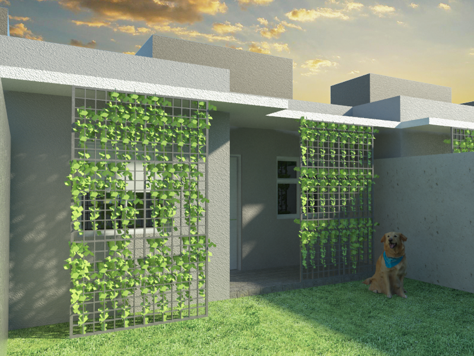
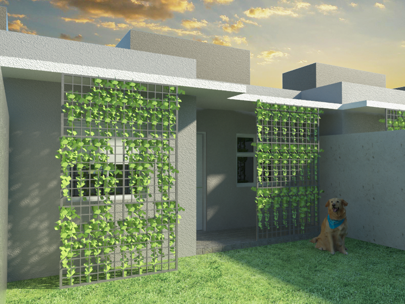

Ateliê de Projetos IV
Descrição do Projeto
Para esta disciplina foi desenvolvido o projeto de uma habitação de interesse social da tipologia casa isolada, possuindo 50m² de área que acomodam sala de estar, dois dormitórios, banheiro social, cozinha, uma área de serviço externa junto ao pátio e espaço para um carro na frente da residência.
O projeto conta com platibanda para esconder o telhado e marquises e brises com vegetação que servem como proteção da incidência de luz do sol. Foi utilizado no projeto o sistema construtivo Steel Frame por ser sustentável e possuir maior rapidez na execução.
O projeto foi modelado no software SketchUp e renderizado com o VRay para SketchUp 2.0.
 

Voltar ao portfólio